软件快速操作
VDA Analyzer 系列软件分为两个版本：全场应变 (VDA Strain Analyzer)、刚性体移 (VDA Rigid Analyzer)，分别适配 VDA 全场应变测量仪、VDA 刚性位移分析仪两款产品。两者用于不同类型的测量分析，软件安装与相机标定流程基本一致，分析操作区别较大。下文简述软件安装与操作基本流程。
软件使用流程
VDA Analyzer 支持在线/离线标定、在线/离线分析、视频流保存、分析数据回放，软件使用流程图如下。未连接 VDA 分析仪设备时，仅可使用流程 3/5/6，进行离线标定、离线分析、分析结果回放。
%%{ init: { 'flowchart': { 'curve': 'linear' } } }%%
flowchart TB
Start(开始) --1--> Config[配置相机并选择标定文件] --> CaliOnline[在线标定] --> AnalyOnline[在线分析] --> End(完成)
CaliOnline[在线标定] --2--> SaveGraph[保存标定图片等数据] --> CaliOffline[离线标定] --> AnalyOffline[离线分析] --> SaveResult[保存分析结果] --> End
Start --3--> CaliOffline
AnalyOnline --4--> SaveVideo[保存视频流] --> AnalyOffline
Start --5--> GetData[其他设备获取数据] --> Transfer[转换数据格式] --> AnalyOffline
Start --6--> Review[分析结果回放] --> End软件下载与安装
联系本公司销售或技术支持，获取 VDA Analyzer 软件安装包与加密狗。双击.exe 文件，根据指引完成安装。使用笔记本电脑/工控机的推荐配置如下。
| 笔记本电脑 | 工控机 | |
|---|---|---|
| 处理器 | 英特尔 酷睿 i7 | 英特尔 酷睿 i9 |
| 内存 | 32G | 32G |
| 硬盘 | 1T 固态硬盘 | 2T 固态硬盘 |
| 操作系统 | Win 10 | Win 10 |
| 数据接口 | 2 个 USB3.0 接口（用于线缆连接），1 个 USB2.0 及以上接口（用于加密狗连接） | 1 个 PCIe 接口（采集卡）、1 个万兆网卡、2 个万兆网口（用于线缆连接），1 个 USB2.0 及以上接口（用于加密狗连接） |
安装完成后，在笔记本/工控机的 USB2.0 及以上接口插入加密狗，即可使用软件。
设备调整
完成设备安装并确保电源可靠连接后，调整相机与标定板（或标记区域，后同）的位置。2D 版本应使标定板对准相机，3D 版本应使标定板居中对齐相机基线（即左、右相机光心连线中点）。
打开软件，进入主界面 → 在线标定配置区，选择设备与对应的镜头高精度文件，并在下拉框中选择“激光标定”或“多点标定”，点击【确认】打开在线标定页。

注意
如果未购买本公司工控机，主界面中镜头高精度文件将显示为空。请联系本公司客服获取高精度文件，将文件夹解压后拷贝至软件安装目录下的 CamCalibConfig 文件夹下。
视图基本操作
| 视图操作 | 方法 |
|---|---|
| 移动图像 | 左右移动：空格键 + 鼠标左键拖动 上下移动：鼠标滚轮滑动，或空格键 + 鼠标左键拖动 |
| 缩放图像 | 空格键 + 鼠标滚轮或 Ctrl + 鼠标滚轮 |
| 选点 | 鼠标左键单击 |
| 取消选点 | 鼠标右键单击 |
| 删除被测点 | 逐个删除：鼠标右键 删除指定被测点：Ctrl + 右键 |
| 移动被测点 | Ctrl + 鼠标左键拖动 |
| 修改指定被测点参数 | Ctrl + 鼠标左键，选中指定的被测点后进行参数修改。 |
调整视野
通过调节设备的高度以及俯仰角，调整测量视野。
-
2D 版本
(1) 调节三脚架，大致确定设备高度。
(2) 调节云台旋钮，使得目标区域位于相机画面中间位置。调节完成后，锁死云台方向调节旋钮。
(3) 如果需要调节设备俯仰，先松开云台上的旋钮，同时用单手轻扶鹰眼盒下半部分（请勿握持摄像和激光模块），平稳旋转调节视野后，锁死云台上的旋钮。
-
3D 版本
(1) 调节三脚架，大致确定设备高度。
(2) 调节云台旋钮与铝合金平台两端的旋钮，使得目标区域均位于左、右相机画面的中间位置。调节完成后，锁死云台旋钮。
(3) 如果需要调节设备俯仰，先松开相应的制动螺旋，同时用单手轻扶铝合金平台（请勿握持摄像和激光模块），平稳旋转调节视野后，锁死对应的制动旋钮。
调整焦距
如果成像不清晰，可使用镜头上的调焦旋钮调整焦距。
注意
请保证两个相机成像的清晰度。相机标定开始时，需要调节对焦质量；标定结束之后，请勿再次调节对焦旋钮，光圈旋钮可以更加实际情况选择是否调节。
调整曝光
成像区域过曝时，应适当调小镜头的光圈旋钮，或降低环境光源强度；成像区域曝光不足时，应适当调大镜头的光圈旋钮，或增强环境光源强度。如果调节镜头结果不佳，可在 VDA Analyzer 软件中进入相机控制功能调节曝光值，操作详见 准备工作 - 相机控制。
提示
测量环境光线强烈时，建议使用 11 及以上的光圈值；光线适中时，建议使用 4 至 11 的光圈值；光线较弱时，建议使用 4 以下的光圈值。
注意
对于 3D 版本，需确保左、右镜头的光圈一致。
标定
VDA Analyzer 提供激光标定、多点标定两种标定方法，用户可根据不同使用场景选择更适合的方式。
| 标定方法 | 支持标定模式 | 速度 | 设备要求 | 适用场景 |
|---|---|---|---|---|
| 激光标定 | 仅在线标定 | 相对较慢 | 必须带有激光测距仪 | 不方便放置标定板、距离太远、无法直接测量的场景。 |
| 多点标定 | 在线标定、离线标定 | 相对较快 | 通用 | 可放置标定板、方便测量的场景。 |
注意
标定完成后，仅允许调节镜头光圈，不允许调节镜头焦距、挪动设备或被测物，否则会影响后续分析工作。
在线标定
激光标定
注意
激光标定时选取的标定面不能反光，否则可能影响识别。
-
在主界面 → 在线标定配置区，选择设备与对应的镜头高精度文件，在下拉框中选择“激光标定”，点击【确认】打开在线标定页。
-
通过鹰眼盒背面的旋钮调整激光方向，使得相机视图中的激光点照射到所需的原点 O 的位置。对于 3D 版本，应调整左、右激光方向，使得左、右相机视图中，左激光点、右激光点与原点 O 的位置均重合。
-
单击相机视图中的激光点中心处，触发激光测距，鹰眼盒至激光点的距离将自动记录在标定数据区。按同样的方法，依次用激光确定相机视图中点 X、点 Y 的位置，并完成相应的测距。
注意
选择 X 点时，应使射线 OX 与期望的 x 轴正方向一致；选择 Y 点时，应使射线 OY 与 OX 大致垂直。
注意
对于 3D 版本，左、右相机的激光点必须重合。激光点重合后，左、右相机都需要在视图中点击激光点触发测距。
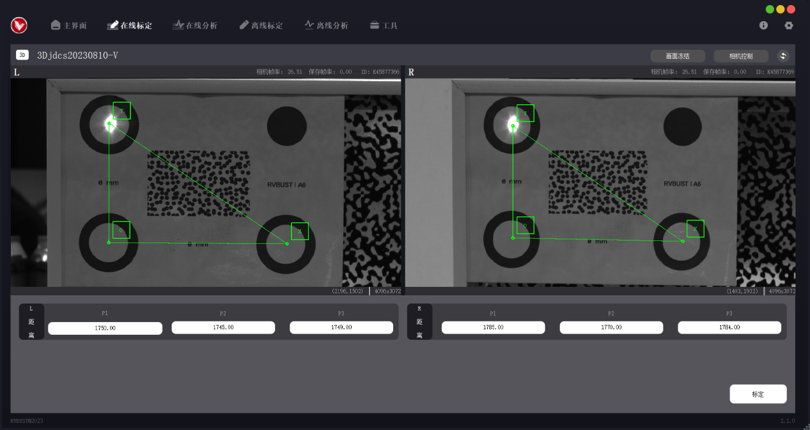
-
完成所有测距后，点击【标定】,计算完成后将弹出标定结果展示窗口。如果确定使用当前标定结果，点击【保存】，标定数据将自动保存至本地。
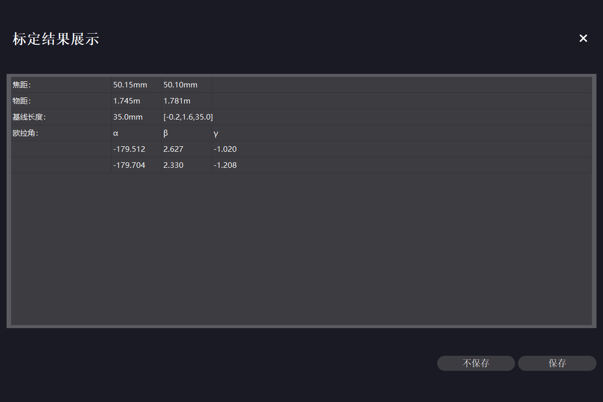
多点标定
多点标定可自动识别标定板圆心，也可手动选点。若使用标定板进行标定，建议选择自动识别功能；若不方便放置标定板（如测量地点在户外且与设备距离较远），或自动识别失败，可采用手动选点。
在主界面 → 在线标定配置区，选择设备与对应的镜头高精度文件，在下拉框中选择“多点标定”，点击【确认】打开在线标定页。
自动识别：
注意
多点标定自动识别模式下，视野区域内不能有其他明显圆环，否则可能影响识别。
-
使标定板尽可能位于相机视野中心位置。
-
下拉选择标定板规格，在“识别方式”中点选“自动识别”。软件将自动检测标定板的 4 个圆心位置，相机视图中展示 4 个圆心与各点间的理论距离。
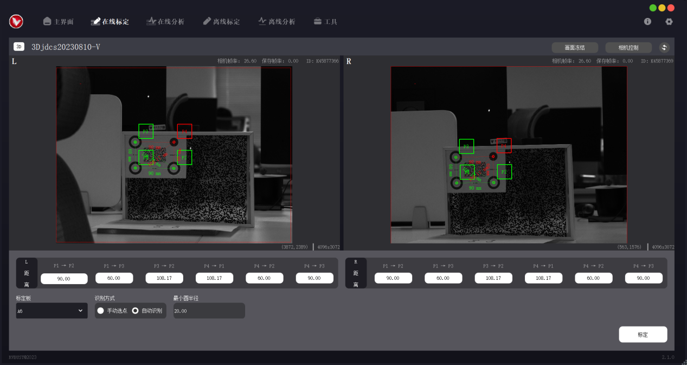
-
完成自动识别后，点击【标定】。计算完成后将弹出标定结果展示窗口，视图中显示坐标系，下方显示标定数据。如果确定使用当前标定结果，点击【保存】，标定数据将自动保存至本地。
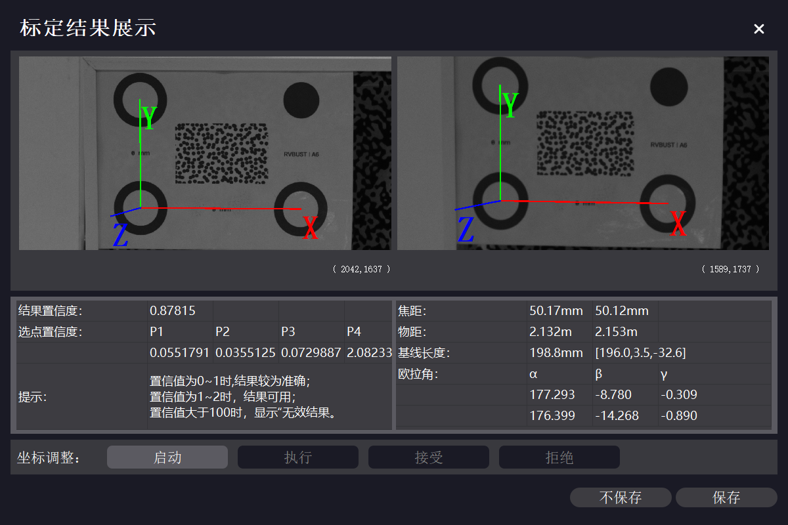
手动选点：
-
在“识别方式”中点选“手动选点”，标定板下拉框选择 NULL。
-
在相机视图中用鼠标左键单击，依次选择 4 个点。P1、P2、P3 分别对应原点 O、x 轴正方向、y 轴正方向，P4 位于 xOy 平面内。如需取消选点，点击鼠标右键逐次取消。对于 3D 版本，需在左、右相机视图中按此操作分别依次选择 4 点，左、右相机视图中所选的点应按顺序一一对应。
注意
选择 P2 点时，应使射线 P1P2 与期望的 x 轴正方向一致；选择 P3 点时，应使射线 OY 与 OX 大致垂直。
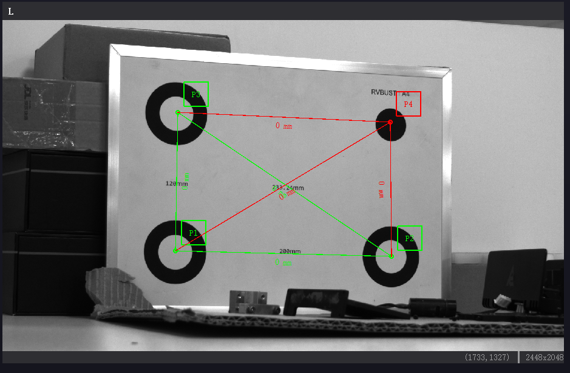
-
通过实地测量或其他方法获取上述 4 点之间的实际距离值，在距离区中输入对应的距离值。数据填写完成后，视图上会显示距离信息，可对比实际物体，检查距离输入是否正确。
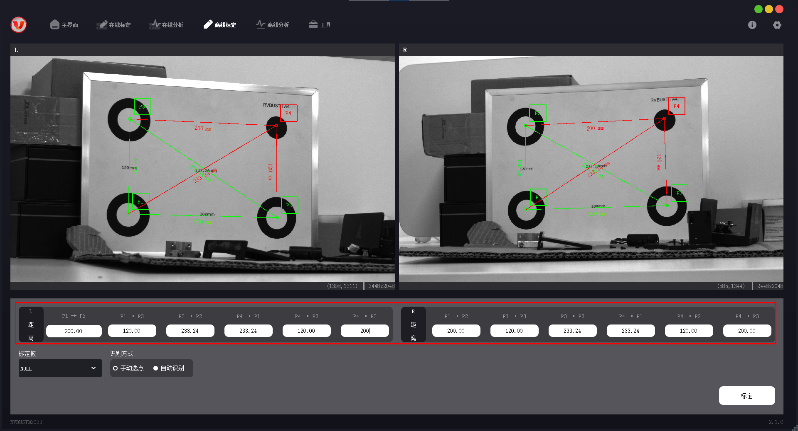
-
点击【标定】。计算完成后将弹出标定结果展示窗口，视图中显示坐标系，下方显示标定数据。如果确定使用当前标定结果，点击【保存】，标定数据将自动保存至本地。
离线标定
用 VDA 采集的文件可进行离线标定。当标定结果需要更改时，可使用离线标定功能，利用标定文件复现在线标定场景，重新选点标定。
如果进行过标定，标定文件夹内会生成在线工程标定文件 31415926535A.txt。重新进行标定后，该文件中的标定数据会更新。需要使用新的标定结果时，可将更新后的文件 31415926535A.txt 拷贝至离线数据文件夹，替换之前的版本。
离线标定仅支持多点标定方法，操作步骤如下。
-
准备离线标定文件夹。离线标定文件夹内的必要文件组成见下表。
文件功能描述 2D 版本 3D 版本 相机高精度文件 31415926535A_L.txt 31415926535A_L.txt（左相机）
31415926535A_R.txt（右相机）相机相元大小及点位距离信息文件 CalibrationMsg.txt CalibrationMsg.txt 相机拍摄的标定区域图像 calib_image.bmp left_calib_image.bmp（左相机）
right_calib_image.bmp（右相机）获取离线标定文件夹的方式有 2 种：
-
自动生成：VDA Analyzer 软件使用期间会自动触发拍照。采集的标定文件夹以“Calibration_拍摄时间”的形式命名，默认保存在安装路径下的 VDA_CameraFrame 文件夹内。进行离线标定时，可直接选取对应的文件夹。
-
手动采集：点击【相机控制】，在“基础”选项中点击【拍照】，采集的图像默认保存在安装路径下的 VDA_CameraFrame 文件夹内。新建离线标定文件夹，按上述文件组成，将必备的文件拷贝至文件夹内，并修改图像文件名为指定形式。
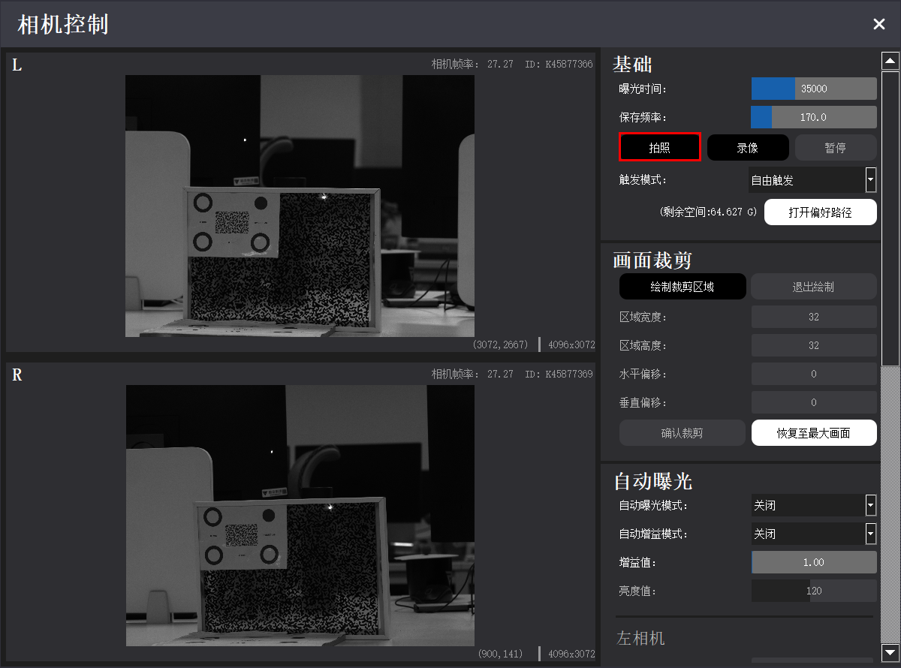
-
-
在主界面 → 离线标定配置区，点击【打开标定文件夹】，选择离线标定文件夹。若文件被成功识别，界面将展示标定类型（2D 或 3D）及预览图。点击【下一步】，进入离线标定页。

-
进入离线标定页之后的操作步骤与 在线多点标定 一致。
标定结果参数说明
| 参数 | 2D 版本 | 3D 版本 |
|---|---|---|
| 焦距 | 当前设备使用的镜头焦距 | 当前设备使用的镜头焦距 |
| 物距 | 相机到物体的距离 | 左物距对应左相机到物体的距离，右物距对应右相机到物体的距离 |
| 基线长度 | 无 | 左、右镜头的中轴线距离 |
| 欧拉角 | α 数值对应 x 轴绕角，β 数值对应 y 轴绕角 | α 数值对应 x 轴绕角，β 数值对应 y 轴绕角，γ 数值数值对应 z 轴绕角 |
分析
在线分析
在线分析分为 2D 在线分析与 3D 在线分析。3D 在线分析要求设备必须进行过标定，2D 在线分析可以不标定。标定过的设备可分析实际位移 (mm)，未标定的设备只能分析像素位移。在线分析的基本操作步骤如下。
-
在主界面 → 在线分析配置区，选择对应的设备，点击【确认】打开在线分析页。

-
点击【分析设置】，弹出分析参数设置窗口。全场应变版本在相机视图中选择感兴趣区域 ROI (Region of Interest)，刚性位移版本在相机视图中选择感兴趣点 POI (Point of Interest)。选取时的鼠标 + 键盘操作方式见下表。
ROI/POI 操作 方法 添加 ROI/POI 鼠标左键拖动。 删除 ROI/POI 鼠标右键单击，逐次取消之前选择的 ROI/POI。
Ctrl + 鼠标右键单击，选中指定的 ROI/POI 并删除。移动 ROI/POI Ctrl + 鼠标左键拖动。 修改指定 POI 参数 Ctrl + 鼠标左键，选中指定的 POI 后进行参数修改。
暂不支持对指定的 ROI 修改参数。
全场应变 ROI
刚性位移 POI -
在分析参数设置窗口修改“子集宽度”“子集高度”数值，相机视图中将以黄色方框标记出子集区域。调整参数值，确保子集区域内包含足够多的纹理变化。其他分析参数可根据分析需求进行调整。参数解释详见 全场应变 - 分析参数分类说明，刚性位移 - 分析参数分类说明。

全场应变 ROI 子集大小
刚性位移 POI 子集大小 -
关闭分析参数设置窗口，点击【开始分析】。若启动成功，全场应变版本将展示实时应变云图，刚性位移版本将展示实时位移曲线。

全场应变实时云图
刚性位移实时曲线 -
对于 3D 在线分析，若未检测到深度信息，将出现提示框，跳转至深度计算。
(1) 根据相机视图，判断被测物上距离相机基线最近、最远的点。
(2) 根据提示，在左、右相机视图中，依次选择上一步中确定的最近点与最远点。左、右相机视图中的点位应依次对应。
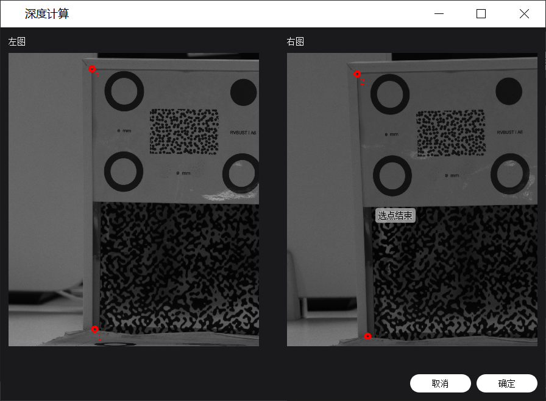
(3) 进行深度计算完成后，点击【确定】，回到在线分析页。再次点击【开始分析】，即可启动分析。
离线分析
使用 VDA 采集的文件可进行离线分析。2D 离线分析还可使用其他来源的.bmp 图像，也可将其他格式的图片、视频转换为.bmp 图像序列，进行像素分析。3D 离线分析只能使用本软件录制的.vdd 格式视频，或将视频转换为.bmp 图像序列，进行位移分析。离线分析基本操作步骤如下。
-
准备离线分析文件夹。离线分析文件夹内的必要文件组成见下表。
文件功能描述 文件名 相机标定文件 31415926535A.txt 相机采集的视频或图像序列（格式需为.vdd 或.bmp，3D 版本左、右相机图像数量与命名需一一对应） .vdd 视频流：
img_00000001.vdd
img_00000002.vdd
img_00000003.vdd
……
.bmp 图像（2D 版本）：
left_00000001.bmp
left_00000002.bmp
left_00000003.bmp
……
.bmp 图像（3D 版本）：
left_00000001.bmp
left_00000002.bmp
left_00000003.bmp
……
right_00000001.bmp
right_00000002.bmp
right_00000003.bmp
……ROI 坐标文件（可选。仅针对全场应变版本，需要使用固定 ROI 区域时导入） roi_msg.txt POI 坐标文件（可选。仅针对刚性位移版本，需要使用固定 POI 时导入） poi_msg.txt 获取离线分析文件夹的方式有 2 种：
-
VDA 软件采集：点击【相机控制】，在“基础”选项中点击【录像】，完成后点击【停止】。采集的离线分析文件夹以“VDD_Frame_拍摄时间”的形式命名，默认保存在安装路径下的 VDA_CameraFrame 文件夹内。.vdd 视频文件按拍摄时间命名，进行在线分析时，可直接选取对应的文件夹。
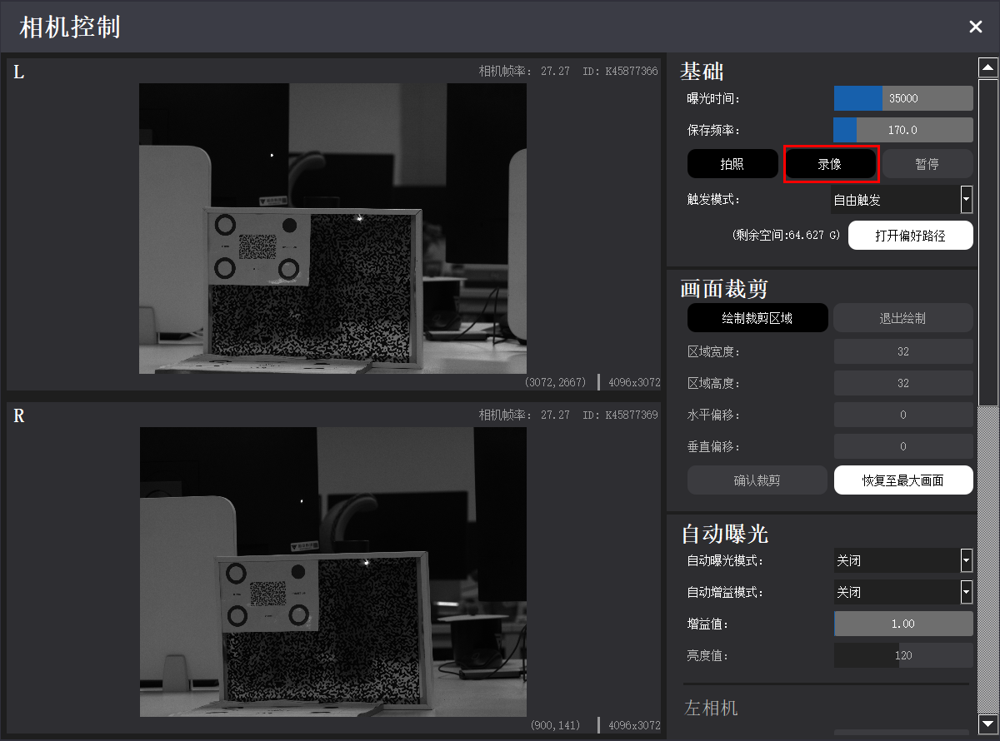
-
其他采集来源：其他设备采集的图像序列也可用于 VDA 离线分析。
(1) 首先需进行图像转换与命名。进入导航栏 → 工具 → 图像转换，“待转换文件夹”选择需要转换的图像文件夹，“图片类型”选择图像原格式；在“导出命名规则”中设置图像命名是否加上 left_ 或 right_，“导出文件夹”选择导出路径。

(2) 完成图像转换后，新建离线分析文件夹。按前面所述的文件组成，将必备的文件拷贝至文件夹内，并修改文件名为指定形式。
-
-
在主界面 → 离线分析配置区，点击【打开分析文件夹】，选择离线分析文件夹。若文件被成功识别，界面将展示分析类型（2D 或 3D）及预览图。点击【下一步】，进入离线分析页。

-
在离线分析页 → 分析控制区 → 分析控制页，可调整分析间隔与分析进度；点击【分析参数】 → 输出 → 存储回放数据，设置是否存储数据用于分析结果回放。
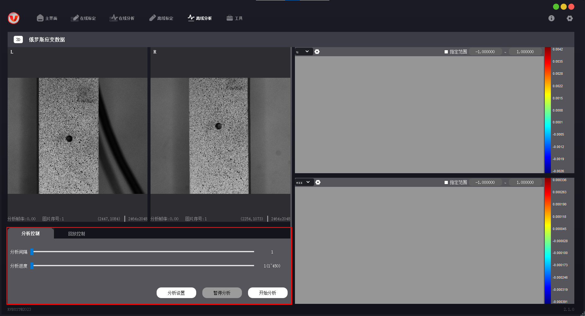
-
之后的操作步骤与 在线分析 基本一致。
分析结果
全场应变云图
在云图显示区，可通过云图上方的设置栏调整当前云图的显示方式。将光标置于云图点位上，可查看该点对应的分析数据。云图右边的彩色条形为色带，旁边标注有数据范围，用于对比查看云图中的应变值。

-
点击云图左上角的下拉框，选择 u/v/w 或 exx/eyy/exy/e1/e2，可切换不同分析分量的云图。
-
点击
 可保存云图。.csv 格式可保存云图所有的点位信息，.jpg 格式可保存为图片形式。可设置是否保存色带、图像中颜色过度程度。
可保存云图。.csv 格式可保存云图所有的点位信息，.jpg 格式可保存为图片形式。可设置是否保存色带、图像中颜色过度程度。 -
点选“指定范围”，可修改色带值的上下限。
刚性位移曲线
在曲线面板区 → 曲线显示设置栏，可调整当前应变曲线的显示方式。将光标置于曲线点位上，可查看该点对应的分析数据。

| 选项 | 说明 |
|---|---|
| 曲线展示切换 | 下拉选择不同分析指标的曲线信息，可选择位移/速度/加速度/频谱/应变。应变功能需要在分析前进行增加点操作，其他则与位移曲线相同，开始分析即可显示）点应变曲线需要两个点以上才可使用，分析前进行点的增加即可进行分析。 |
| 保存曲线值 | 将选中曲线的数值信息保存为.csv 文件。 |
| 清空曲线值 | 清空当前显示的曲线。 |
| 曲线自适应 | 使曲线缩放至与视图最匹配的大小。 |
| POI 列表 | 查看当前 POI 的分析值与置信度。 |
| 更多 - 显示设置 | 显示筛选：勾选显示不同坐标方向曲线。 滤波：对分析数据进行滤波，使曲线更平滑。 显示最新：显示对应数值的曲线长度，不勾选则一直更新。 |
| 更多 - 保存设置 | 设置需要保存分析曲线中的哪些信息。 |
| 更多 - 更新设置 | 自动保存全部数据：勾选后生效，可选择按最近数量或最近时间保存。 分析间隔：可指定在线分析的频率，在分析结果中表示为曲线个数产生的间隔，具体分析速度取决于采样帧率与电脑性能。 |
| 指定范围 | 输入范围值，改变曲线纵坐标显示范围值。 |
分析回放
如果离线分析时选择保存回放数据，之后可查看结果回放。回放数据包含分析参数、ROI/POI、分析结果云图/曲线等信息，回放过程中无法修改分析参数，但可调整回放速度与区间，可在结果显示区调整云图/曲线显示形式、保存数据等。
-
结果回放
在分析控制区 → 回放控制页，选择回放数据。拖动下方进度条可调整回放速度与回放区间，点击【开始】查看分析回放。
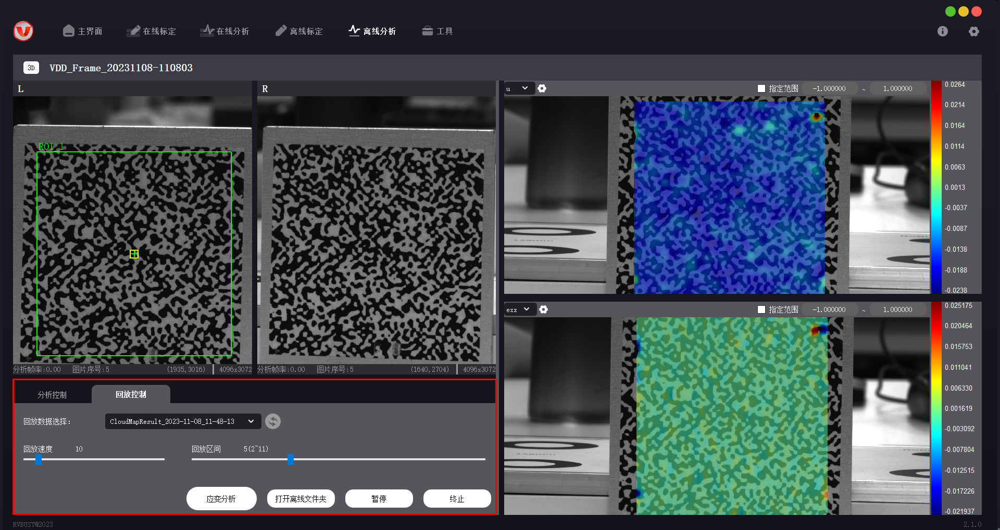
-
应变分析
对于全场应变版本，离线分析回放时，可通过应变分析功能提取数据信息。操作步骤如下。
(1) 点击【应变分析】，打开应变曲线分析弹窗，弹窗内显示视图与 ROI 信息。
(2) 在视图中点击点位（最多可选择 20 个点），勾选需要分析的应变方向，点击【开始分析】。
(3) 分析完成后，视图下方会展示每个点对应的数据曲线。在曲线显示区点击选中曲线，点击【曲线自适应】，可根据数值变化大小，调整曲线显示范围；点击【保存曲线值】，可将曲线数据信息保存至偏好路径中。
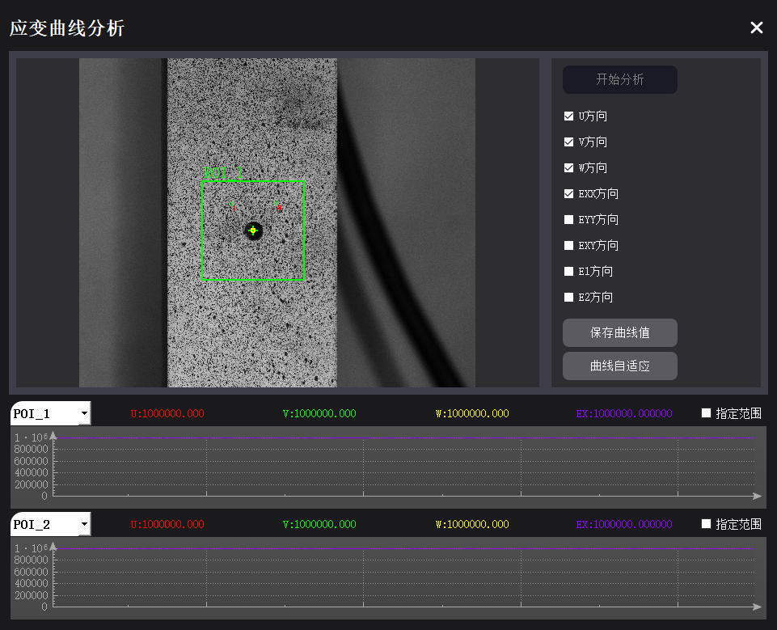